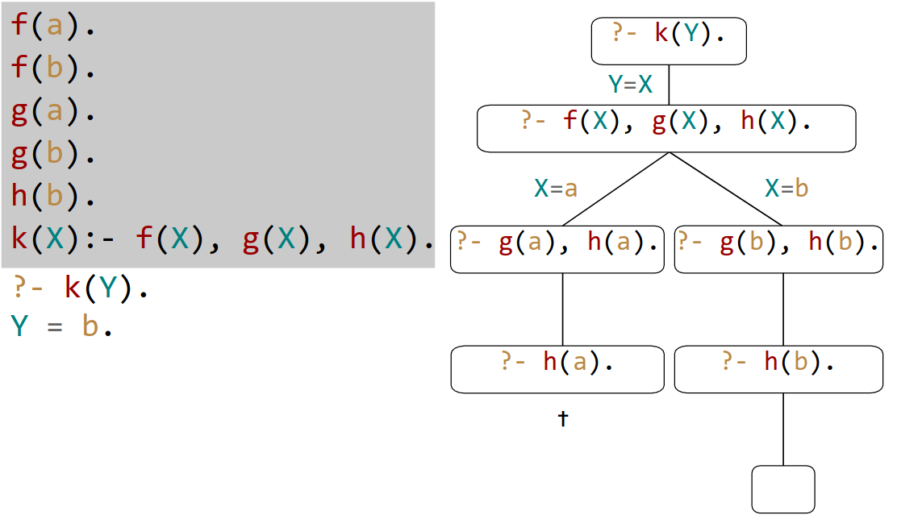

Summary¶
Prolog¶
- Variables start with an uppercase letter
- Atoms are in
''quotes or start with a lowercase letter Arityis the number of arguments of a complex term- Predicates with different arity are different ("overloading")
- Two terms unify if either:
- they are identical
- or can be instantiated uniformly such that the resulting terms are equal
- Arithmetic:
2 + 3 = 5->2+3 is 5- Syntactic sugar for
is(+(2,3),5)
- Syntactic sugar for
Recursion¶
- List recursion:
[H|T] - Prefer tail recursion (e.g. with accumulators), the search tree will be smaller
- in a recursive clause, base case should always come before the recursive "call", or it won't terminate!
Proof search¶

Collecting Solutions¶
- Find all solutions from a goal for a specific object (here
Xand collect them in ListL)- Always succeeds, empty List if no solutions found
findall (X, descend(martha,X), L).
Lambda Calculus¶
- Application binds tighter than abstraction
- Application is left-associative
- A term is in normal form if no further reductions can be applied to it
- Every term has at most one normal form (this makes computation deterministic)
- -reduction: substitution of a defined symbol with its definition
Strategies¶
- Innermost-first: the innermost reducible expression (redex) first, i.e. there's no other redex inside it
- if ambiguous, the left-most first
- with this strategy, function arguments are reduced exactly once
- corresponds to call by value
- outermost-first (normal form): the outermost redex first, i.e. there's no redex outside it
- if ambiguous, the left-most first
- Always ends in a normal form
- with this strategy, function arguments are reduced as many times as they're needed -> unneeded arguments won't be reduced
- corresponds to call by name
Haskell¶
Types¶
Inthas a fixed precision (64 bit), whileIntegerhas an arbitrary precision- Function application is left-associative, while the type definition
t1 -> t2is right-associative typedeclares a type as an alias of other types- No recursion allowed
- may have parameters
- example:
type Assoc k v = [(k,v)]
datadeclares a new type- Recursive definitions possible
- with type parameters:
data Shape = Circle Float | Rect Float Float - if type has a single constructor,
newtypecan be use for efficiency:newtype Nat = N int - example:
data Tree a = Leaf a | Node (Tree a) a (Tree a)
Classes¶
- like an interface, defines what methods a type must have
- can have default definitions
1 2 3 | class Eq a where (==), (/=) :: a -> a -> Bool x /= y = not (x == y) -- default definition |
- classes can be extended:
class Eq a => Ord a where ... - Defining instances:
1 2 3 4 | instance Eq Bool where False == False = True True == True = True _ == _ = False |
- instances can be defined directly inside the type definition
datawithderiving
1 2 | data Bool = False | True -- order matters here, such that False < True deriving (Eq, Ord, Show, Read) |
Functions¶
- Guarded Equations (read
|as "such that"):
1 2 | abs n | n >= 0 = n | otherwise = -n |
- cons
:is right-associative:1:2:3:[] == [1,2,3]
Foldr / Foldl¶
foldr
1 2 3 | foldr :: (a -> b -> b) -> b -> [a] -> b foldr f v [] = v foldr f v (x :xs) = f x (foldr f v xs) |
foldl
1 2 3 | foldl :: (a -> b -> a) -> a -> [b] -> a foldl f v [] = v foldl f v (x :xs) = fold f (f v x) xs |
- as non-recursive patterns:
Function composition¶
f . g: Read "f of g of ..."f . g = \x -> f (g x)
Interactive Programming¶
IOis an built-in type- Modeled as
type IO a = "world" -> (a, "world"), i.e. with side effects, "impure" - Sequencing
1 2 3 4 5 | act :: IO (Char,Char) act = do x <- getChar getChar -- result discarded y <- getChar return (x,y) |
Functors¶
- Functors abstract the idea of
mapto a generalfmap - e.g. with
Maybe:fmap g (Just x) = Just (g x) - Applies a function to the inner elements of a data struture
Applicatives¶
- Extends
Functor - Extends the concept of
fmapto an arbitrary amount of function arguments (whereasfmapjust takes 1 function)
1 2 3 | class Functor f => Applicative f where pure :: a -> f a (<*>) :: f (a -> b) -> f a -> f b |
- Applicative form:
pure g <*> x1 <*> ... <*> xn gtakesnarguments- e.g.
pure (+1) <*> [1,2] = [2,3]=fmap (+1) [1,2]
Monads¶
- Allows the
donotation - Extends
Applicativewith a "bind"-operator>>=(>>=) :: m a -> (a -> m b) -> m b
return = pure
1 2 3 4 5 6 7 8 9 | eval (Val n) = Just n -- applicative `pure` of Maybe is `just` eval (Div x y) = eval x >>= \n -> -- n is the result of eval x eval y >>= \m -> safediv n m -- equivalent to -- eval (Div x y) = do n <- eval x m <- eval y savediv n m |